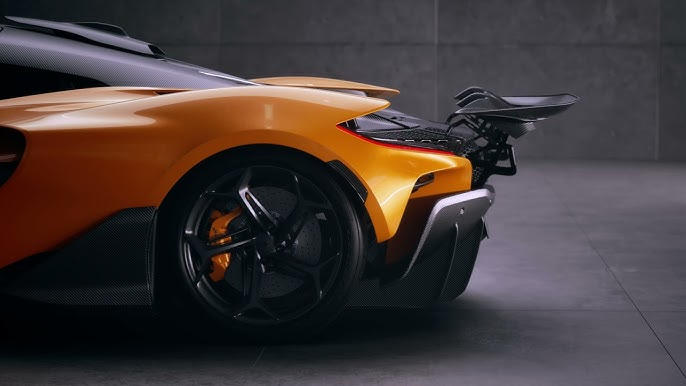
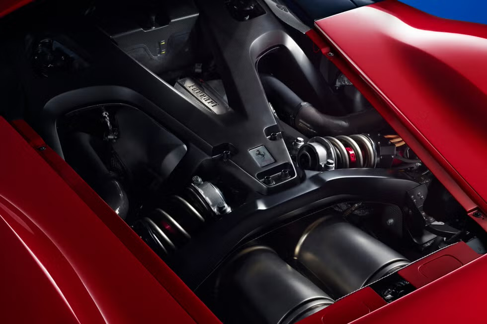
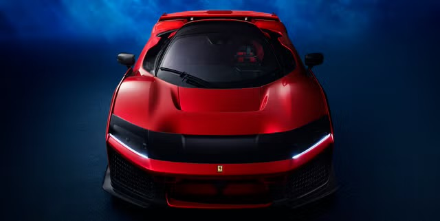

The new McLaren W1 is the new generation hypercar for McLaren. This car pays homage to the F1 and P1 predecessors but, it may also come with mixed reviews. The W1 shares some similarities between the previous models such as the McLaren Senna and McLaren Speedtail. The McLaren Senna similarities show in the W1’s side profile. The W1 is slightly condensed at 182.5 inches compared to the Senna’s 186.7 inch side profile. The W1 also shows similar design features the headlights and front lips of the McLaren Speedtail. We would have to look internally for the reasons why McLaren chose the W1 as its new flagship car.
The ‘1’ in all of the supercars that are prestigious enough to hold the title stands for McLaren’s ultimate supercar standard. The W1 features McLaren’s new MHP-8 that is a 8-speed dual clutch V8 engine. The displacement is the same as previous ‘1’ cars 4.0L engine but the technology behind the high revving 1,275HP engine is what sets it apart. This allows the W1 to be McLaren’s fastest accelerating road car as it reaches 200 km/h or 125mph is 5.8 seconds from a stand still position. Another key difference is the engine features 928 hp from the naturally aspirated V8 and another 347 from its hybrid engine. The maximum torque for the W1 stands at 988 lb-ft. Typically cars with over 1000 hp from a hybrid system are all-wheel drive, but the W1 is strictly rear-wheel drive. This also allows W1 to carry significantly less weight this its peers. Many of the design features are all about reducing weights and bringing the car closer in ratio to power vs weight.
From a car purest standpoint this care should be appreciated, but only time will tell. Unfortunately you’d be unable to get your hands on one until one because available on the secondary market because all McLaren W1’s have been sold and allocated.
5 electric motors in a V6 Ferrari. That should be the headline for Ferrari’s latest hypercar that is to be the Successor to the LaFerrari. These are hard standars to live up to as the LaFerrari was an extremely well received. The second car in the holy trinity has to be able to compete with competitors such as McLaren and Porsche. The engine is based on the Ferrari’s formula one racing team’s V6 engine that is in their racing cars. The 3.0L V6 is a twin-turbo that puts out 1,184 hp and hits an astounding 62 mph in 2.2 seconds. Like most hybrid cars the V6 is accompanied by an electric motors to assist some wheels making it an all-wheel drive car. Similar to one of its rivals, it reaches 200kmh or 124mph in 5.8 seconds. Two of the electric motors assist the turbo chargers to provide direct power. Without the restrictions of the e racetrack, this V6 engine owns 900 hp of the total power that the Ferrari F80 puts out.
As for the design features, some may also be underwhelmed. The cars is pretty similar in its overall style to the Ferrari Daytona SP3. The only difference is that it does not have the classic stacked lines on the rear bumper. The F80 is 3D printed for the first time in a road car by Ferrari and this is significant because the design intention was also to keep the car lighter while encompassing all the electric motors. And, even the motors are smaller than the typical size that is featured in hybrid supercars. By all means, the car will still be amazing. The question is, by Ferrari’s own standards, will the Ferrari F80 be enough to hold the mantle.
 